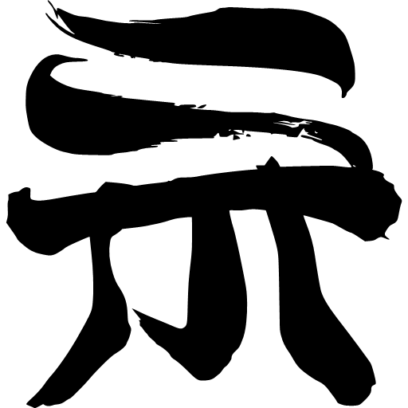
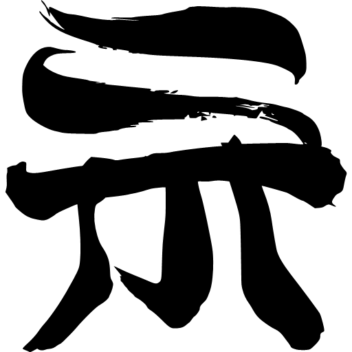

Ублюдок!! Сокрушитель тьмы
Пятнадцать лет назад Дарк Шнайдер, могущественный тёмный маг, собирался покорить весь мир.Он уничтожал королевства, но не оставался править ими, направляясь дальше по своему пути. Первосвященнику королевства Металликаны тогда удалось остановить его.
Теперь четверо Лордов Хаоса, бывшие когда-то последователями Дарк Шнайдера, стремятся закончить его дело, срывая «магические печати», не пускающие в этот мир бога тьмы, именуемого Ансла Сакс. Три печати сорваны, осталась только одна, которая как раз-таки находится в Металликане. У королевства нет воинов, способных сравниться по силе с наступающей армией. Единственным выходом может стать пробуждение Дарк Шнайдера, который был заточён в тело Луша, простого паренька, живущего при храме. Чтобы сделать это его должна поцеловать невинная девушка — дочь первосвященника, Ёко.
Но то, что маг пробудился, не означает, что он захочет помогать королевству. Среди его первых целей отнюдь не защита Металликаны, а месть первосвященнику. В то же время Дарк Шнайдер совершенно не заинтересован в появлении Бога Тьмы и не склонен убивать своих бывших соратников.
 



Вторая часть первого сезона выйдет - 15.09.2022